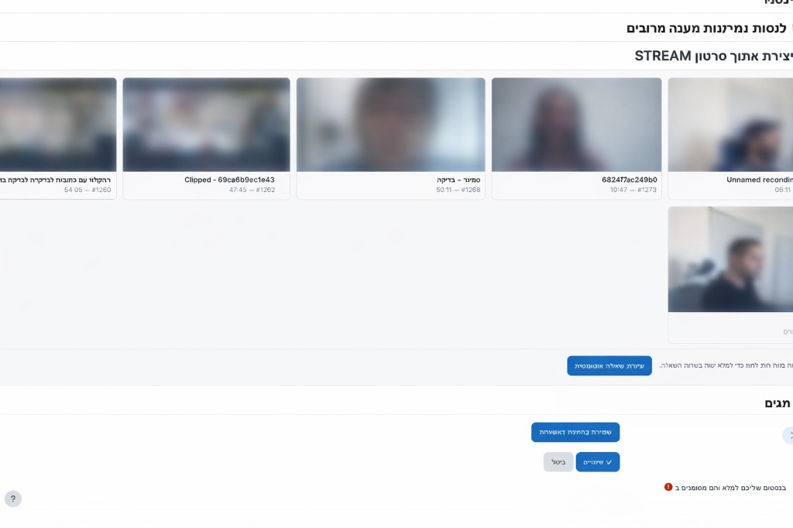

¿Cuándo aparece esta función?
La función aparece en el formulario de nueva pregunta solo cuando el tipo de pregunta es uno de los siguientes:
| Tipo de pregunta en Moodle | Nombre técnico |
|---|---|
| Opción múltiple | multichoice |
| Respuesta corta | shortanswer |
| Verdadero / Falso | truefalse |
Al abrir uno de estos tipos de pregunta, el formulario incluye la sección «Crear pregunta desde vídeo Stream» (ID técnico en la página: questionfromstreamheader) — con una cuadrícula de vídeos y un botón para generación automática.

Requisitos previos
- Configuración del sitio: deben estar configurados la URL de Stream y la clave API. Si faltan, aparecerá una alerta correspondiente.
- Perfil de usuario: normalmente se requiere una dirección de correo electrónico en el perfil para que el sistema cargue la lista de vídeos del servicio (como se describe en los mensajes de error integrados).
- Vídeos con subtítulos: la lista muestra vídeos relevantes para su cuenta/autenticación en Stream, siempre que exista base para generar preguntas a partir de los subtítulos.
Pasos de uso (para cada tipo de pregunta admitido)
- Cree una pregunta nueva y elija el tipo de pregunta deseado entre los tres anteriores.
- En la sección «Crear pregunta desde vídeo Stream» — si hay muchos vídeos, puede paginar. La paginación usa el parámetro
ls_uvpageen la URL. - Seleccione un vídeo de la lista (al hacer clic en una tarjeta se marca como seleccionado).
- Haga clic en «Crear pregunta automáticamente».
- El sistema llama al servidor Stream (con el tipo de pregunta correspondiente) y abre el formulario de pregunta mediante redirección con los campos rellenados previamente.
- Revise y edite el enunciado, las respuestas y las calificaciones, y guarde la pregunta como de costumbre.
questionfromstreamselectvideo).
¿Qué se envía a la API según el tipo de pregunta?
El código del complemento en Moodle mapea el tipo de formulario de Moodle al parámetro question_type en la llamada a Stream:
| Formulario en Moodle | question_type para la API |
|---|---|
| Opción múltiple | multichoice |
| Respuesta corta | short_answer |
| Verdadero / Falso | true_false |
Además, normalmente se envían videoid, count (actualmente 2 al hacer clic desde JavaScript) y parámetros de categoría / curso / módulo del formulario — según la configuración del complemento y del formulario.
Qué espera recibir cada tipo de la API (brevemente)
El servidor Stream devuelve una lista de preguntas en JSON. El complemento verifica que los elementos coincidan con el tipo seleccionado en Moodle:
- Opción múltiple: un elemento con
typecorrespondiente a pregunta de opción múltiple (multiple_choice), incluidas opciones y respuesta correcta — según la especificación de Stream. - Respuesta corta: un elemento
short_answercon texto de pregunta yanswer_key(se admiten fuentes de respuesta adicionales en el mapeo del complemento). - Verdadero / Falso: un elemento
true_falseconquestionycorrect_answerbooleano (trueofalse).
Notas adicionales
- Enlace de relleno previo: el enlace es de un solo uso y de corta duración (basado en token de sesión). Si expiró o intentó abrir manualmente un enlace no válido — vuelva a la selección de vídeo y genere de nuevo.
- Borrador: tras el relleno automático, la pregunta se guarda como borrador que conviene revisar antes del guardado final.
- Alias en la API: al llamar directamente al Web Service también puede usar alias (p. ej.
mc,short,tf) — la interfaz de Moodle usa los valores normalizados indicados arriba.
Para la estructura completa del endpoint y los campos, consulte la documentación para desarrolladores en el archivo webservice/video_subtitle_questions.php del proyecto Stream.